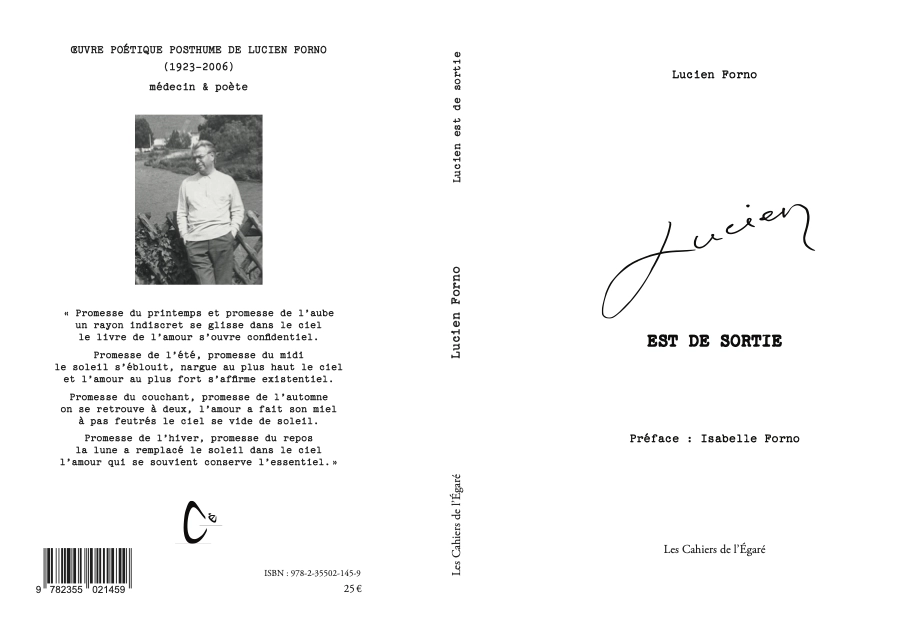
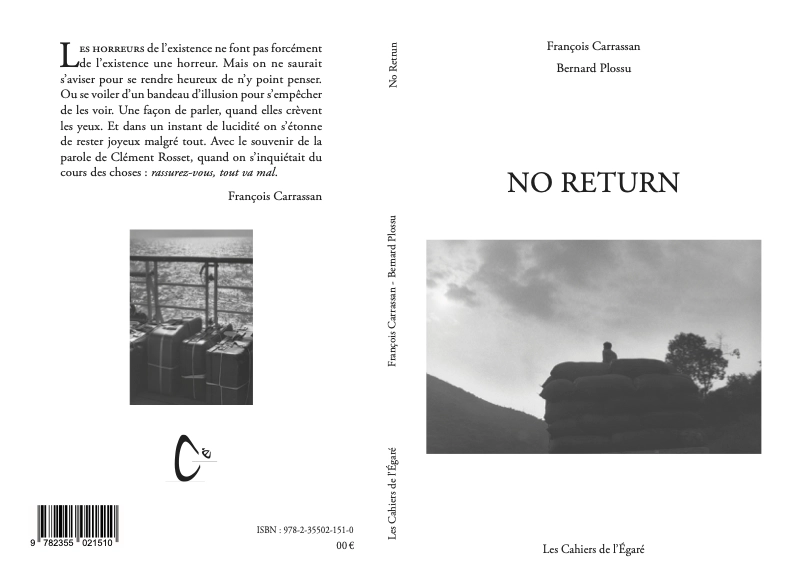
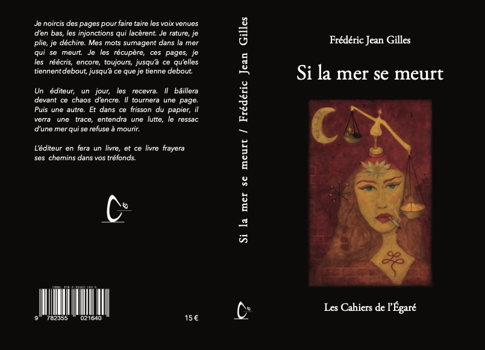
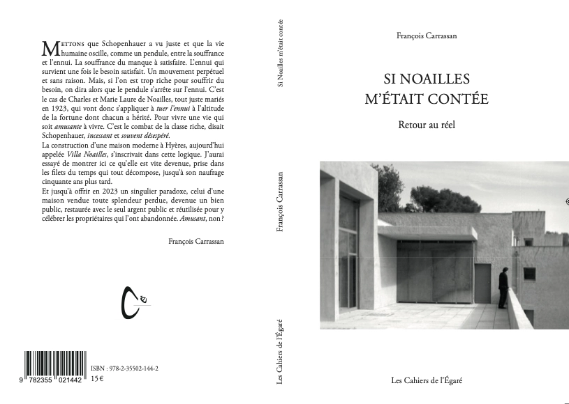
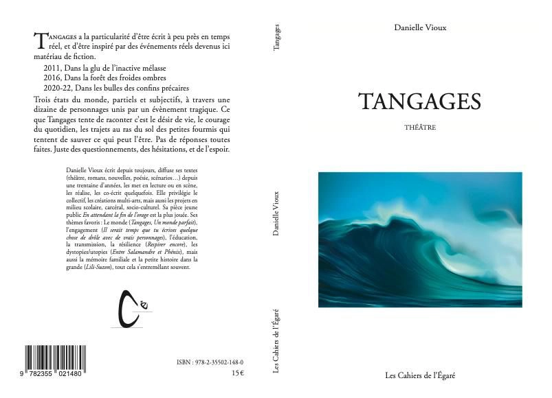
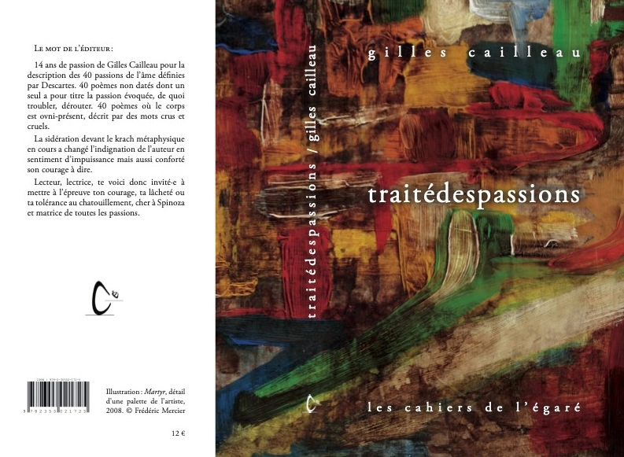

Lucien est de sortie - Lucien Forno
préface Isabelle Forno
OEUVRE POÉTIQUE POSTHUME DE LUCIEN FORNO (1923-2006) - médecin & poète

PVP 25€"Promesse du printemps et promesse de l'aube
un rayon indiscret se glisse dans le ciel
le livre de l'amour s'ouvre confidentiel.
Promesse de l'été, promesse du midi
le soleil s'éblouit, nargue au plus haut le ciel
et l'amour au plus fort s'affirme existentiel.
Promesse du couchant, promesse de l'automne
on se retrouve à deux, l'amour a fait son miel à pas feutrés le ciel se vide de soleil.
Promesse de l'hiver, promesse du repos
la lune a remplacé le soleil dans le ciel
l'amour qui se souvient conserve l'essentiel."
ISBN : 978-2-35502-145-9
No return -François Carrassan et Bernard Plossu
LES HORREURS de l'existence ne font pas forcément de l'existence une horreur.

145 pages, 13,5 X 20,5, 34 photos, PVP 15 €Mais on ne saurait s'aviser pour se rendre heureux de n'y point penser. Ou se voiler d'un bandeau d'illusion pour s'empêcher de les voir. Une façon de parler, quand elles crèvent les yeux. Et dans un instant de lucidité on s'étonne de rester joyeux malgré tout. Avec le souvenir de la parole de Clément Rosset, quand on s'inquiétait du cours des choses : rassurez-vous, tout va mal.
François Carrassan
ISBN 978-2-35502-151-0
Si la mer se meurt - Frédéric Jean Gilles
Si la mer se meurt est sorti des presses de l'imprimerie CLIP le 15 octobre 2025, pour ceux qui ont assisté à la soirée schizophrénie et création artistique du 15 avril 2025 à la Maison des Comoni au Revest et qui ont entendu deux extraits de ce récit, nul doute sur sa beauté et sa puissance.

176 pages, 13,5 X 20,5, 5 illustrations, PVP 15 €ISi la mer se meurt est une traversée intérieure. Celle d’un homme qui tente de se reconstruire après plusieurs épisodes de décompensation psychique. Dans une langue dense, fragmentée, parfois brutale mais toujours vivante, le narrateur trace les contours d’une existence marquée par la maladie mentale, l’errance, les amours, les ruptures, mais aussi les fulgurances mystiques et la lumière têtue du vivant.
À travers des fragments poétiques, des souvenirs d’hospitalisation, des voix intérieures, des rencontres amoureuses et des instants de grâce, le récit navigue entre lucidité et vertige. Il n’est ni un journal, ni un témoignage classique, mais une tentative de dire l’indicible, d’écrire depuis la faille sans s’y perdre. L’écriture devient ici un lieu de recomposition, de dialogue avec le chaos, une manière de rester debout.
Entre spiritualité laïque, exploration du corps et regard tendre sur les marges, Si la mer se meurt est un texte à la frontière de la poésie, de l’autofiction et du chant intérieur. Une parole rare, vulnérable et tenace, pour dire ce qu’on traverse quand tout vacille — et ce qui, malgré tout, tient.
ISBN 978-2-35502-164-0
SI NOAILLES M’ÉTAIT CONTÉE
Retour au réel -François Carrassan
Mettons que Schopenhauer a vu juste et que la vie humaine oscille, comme un pendule, entre la souffrance et l'ennui.

182 pages, 13,5 X 20,5, PVP 15 €L'ennui qui survient une fois le besoin satisfait. Un mouvement perpétuel et sans raison. Mais, si l'on est trop riche pour souffrir du besoin, on dira alors que le pendule s'arrête sur l'ennui.
C'est le cas de Charles et Marie Laure de Noailles, tout juste mariés en 1923, qui vont donc s'appliquer à tuer l'ennui à l'altitude de la fortune dont chacun a hérité. Pour vivre une vie qui soit amusante à vivre. C'est le combat de la classe riche, disait Schopenhauer, incessant et souvent désespéré.
La construction d'une maison moderne à Hyères, aujourd'hui appelée Villa Noailles, s'inscrivait dans cette logique. J'aurai
essayé de montrer ici ce qu'elle est vite devenue, prise dans les filets du temps qui tout décompose, jusqu'à son naufrage cinquante ans plus tard.
Et jusqu'à offrir en 2023 un singulier paradoxe, celui d'une maison vendue toute splendeur perdue, devenue un bien public, restaurée avec le seul argent public et réutilisée pour y célébrer les propriétaires qui l'ont abandonnée. Amusant, non ?
ISBN 978-2-35502-144-2
Tangages - Danielle Vioux
Ce texte à la particularité d’être écrit à peu près en temps réel, et d’être inspiré par des événements réels devenus ici matériau de fiction.

176 pages, 13,5 X 20,5, PVP 15 €Acte 1 : 2011 Dans la glu de l’inactive mélasse.
Une dizaine de personnages des deux côtés de la Méditerranée vivent les conséquences d’un attentat côté Afrique, dans une ville et un pays imaginaire dont le nom est formé avec les initiales de plusieurs : TSEMLA. Cet événement les rassemble, crée des liens. Ils évoluent dans leur vie, leur pensée, leurs amours, à partir de ce choc, de ce traumatisme. Pendant ce temps des révoltes éclatent ici et là dans ces pays du sud et sont porteuses d’espoir. Le textecomporte, comme dans les actes suivants, des dialogues, des monologues et la présence régulière d’un chœur qui ponctue et commente.
Acte 2 : 2016 Dans la forêt des froides ombres
Cinq ans plus tard, les personnages sont rejoints par d’autres. La peur monte tandis que des attentats se produisent cette fois de ce côté-ci de la Méditerranée. Des migrants tentent de passer les montagnes ou la mer. Par ailleurs on entend des voix aux tonalités racistes encore feutrées qui commencent à parler de la nécessité d’un gouvernement à poigne. Pendant ce temps, nos personnages tentent de s’organiser et de lutter par le social, l’éducation, la création. Certains ont quitté le continent africain pour l’Europe. Ils s’obstinent à garder l’espoir malgré les menaces. Et bien sûr, malgré tout, la vie continue, histoires d’amour, histoires du quotidien.
Acte 3 : 2020-22 : Dans les bulles des confins précaires
Cette fois c’est de pandémie qu’il s’agit pour nos personnages, d’isolement et de rencontres, de virtuel et de réel. De leur déception devant un monde d’après qui ressemble beaucoup à celui d’avant. De leur tristesse, malgré les petits bonheurs du quotidien, devant un gâchis social et politique qui a désagrégé les liens humains tandis que les riches sont plus riches et les pauvres plus pauvres encore. Comment lutter, résister, créer du commun ? Comment sonner l’alarme devant les catastrophes annoncées ? Celle du climat dont les responsables semblent peu préoccupés ? Celle de la destruction progressive de la démocratie ?
En conclusion : Trois états du monde, partiels et subjectifs, à travers une dizaine de personnages unis par un évènement tragique... Mais ce que ce texte tente de raconter c’est le désir de vie, le courage du quotidien, les trajets au ras du sol des petites fourmis qui tentent de sauver ce qui peut l’être. Pas de réponses toutes faites. Juste des questionnements, des hésitations, et de l’espoir.
ISBN 978-2-35502-148-0
Traité des passions - Gilles Cailleau
Le mot de l’éditeur :
14 ans de passion de Gilles Cailleau pour la description des 40 passions de l’âme définies par Descartes. 40 poèmes non datés dont un seul a pour titre la passion évoquée, de quoi troubler, dérouter. 40 poèmes où le corps est ovni-présent, décrit par des mots crus et cruels.
La sidération devant le krach métaphysique en cours a changé l’indignation de l’auteur en sentiment d’impuissance mais aussi conforté son courage à dire.
Lecteur, lectrice, te voici donc invité·e à mettre à l’épreuve ton courage, ta lâcheté ou ta tolérance au chatouillement, cher à Spinoza et matrice de toutes les passions.

138 pages, 13,5 X 20,5, PVP 12 €Tu te souviens de cet oiseau qui se souvient de toi
Tu le regardes qui te regarde
Obstinément attachés l’un à l’autre
vous ne bougez pas
À la naissance de tes bras
des fourmis
À la naissance de tes doigts
des fourmis
L’oiseau lui
(ou elle)
sautille d’une patte sur l’autre
Ce qui vous différencie à ce moment-là n’est pas plus épais
qu’un cil
Vous n’êtes plus que ce qui vous arrive
et il vous arrive la même chose
Si précise
Si confuse
et qui n’a pas de nom
Même si c’est plutôt agréable …
ISBN 978-2-35502-172-5